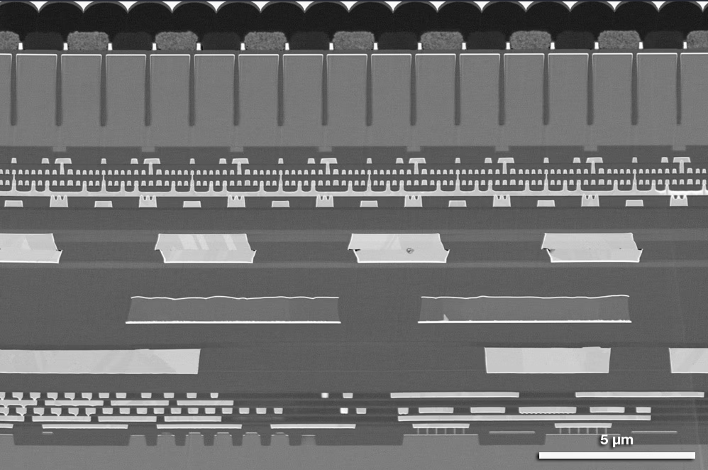
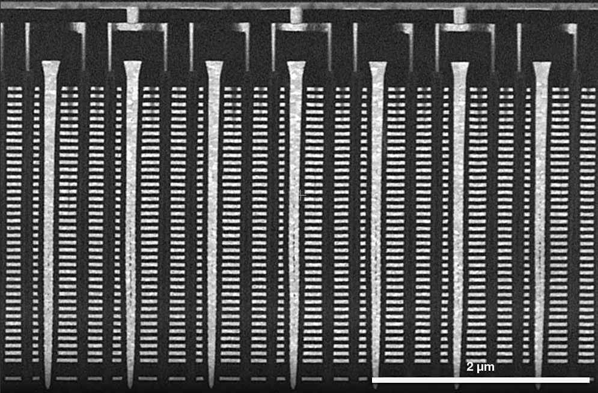

EASYLABELING · MAIN FEATURES
반복적인 이미지 라벨링을
누구나 수행할 수 있는 GUI 작업으로
Detection과 Segmentation을 하나의 로컬 워크스페이스에서 처리하고,
반복 구조는 Template Matching과 Layout으로 빠르게 초안화합니다.

SEM · 반복 구조
고정 배율·반복 패턴에서 클래스 기준과 위치를 일관되게 관리
 TEM · 미세 경계
TEM · 미세 경계
패턴 · 클래스 분리01 · DetectionBounding Box 생성·편집과 YOLO TXT 저장
02 · SegmentationBrush·Erase·Polygon·Superpixel 기반 마스크 편집
03 · AutomationTemplate Matching·Layout·Batch로 반복 작업 축소